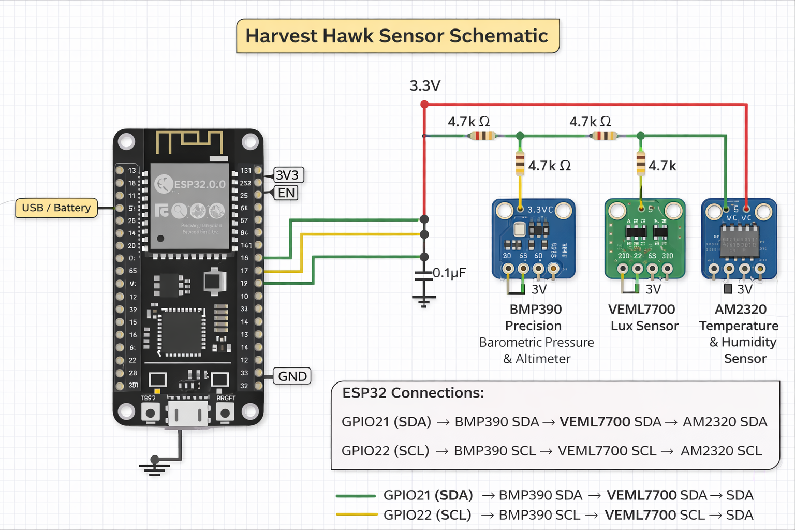

Harvest Hawk
Agricultural robotics system focused on sensor integration, environmental monitoring, and system-level embedded design.



Overview
Harvest Hawk is a robotics and embedded systems project designed to monitor agricultural conditions through integrated sensing and controller-based system design. The project used an ESP32 as the main controller and connected multiple environmental sensors across a shared I2C bus, including the BMP390, VEML7700, and AM2320. The goal was to build a system that could collect useful field data and support better environmental awareness in agricultural settings.
How This Meets the Objective
Harvest Hawk supports Objective 1 because it applies embedded systems design to a real-world agricultural monitoring problem. It moved beyond the idea stage and into actual hardware planning, sensor selection, controller integration, and working data collection.
It also supports Objective 5 because the system continuously gathers and presents environmental readings such as temperature, humidity, pressure, and light intensity. That makes it a strong example of real-time embedded sensing, where the system must process changing inputs and produce meaningful output over time.
Project Evidence
Demo Evidence: The data output image above shows real environmental readings produced by the system, and the schematic shows the planned hardware layout using the ESP32 with a shared I2C sensor bus on GPIO21 for SDA and GPIO22 for SCL.
GitHub Repository: Harvest Hawk GitHub link
Key Contributions
- Helped shape the embedded system architecture and sensor layout
- Worked with multi-sensor integration using an ESP32 controller
- Supported data collection planning for environmental monitoring
- Contributed to hardware planning and documentation through schematic development